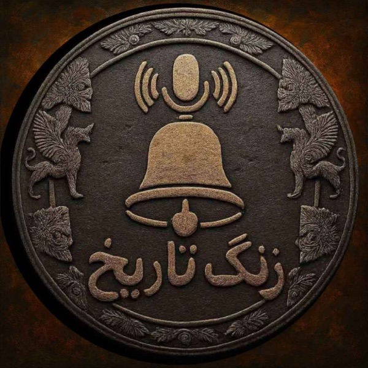

روایت تاریخ در جریان است

پادکست زنگ تاریخ
روایتگر ریشهها، فرازها و فرودهای تاریخ
تهیه، تدوین و اجرا: میلاد نصرتی
«تاریخ، چراغ راه فرداست؛ سفری به اعماق روزگاران کهن برای درک رازهای دیروز، ناگفتههای تمدنها و کشف چراییِ دنیای امروز ما...»
جدیدترین اپیزود منتشرشده
فصل پنجم: سلوکیان و اشکانیان — فراز و فرود شاهنشاهی پارتها
مدت زمان: حدود ۳۰ دقیقه
شنیدن قسمت
کستباکس (Castbox)
محبوبترین
پلتفرم اصلی شنوندگان، همراه با نظرات و گفتگوها
اسپاتیفای (Spotify)
کیفیت صدای عالی و آرشیو کامل تمام فصول
اپل پادکست (Apple Podcasts)
تجربه بهینه برای کاربران آیفون، آیپد و مک
کانال تلگرام پادکست
فایل مستقیم
دانلود بیدردسر فایل صوتی اپیزودها و مطالب تکمیلی
شنیدن تحت وب (تهران پادکست)
دسترسی و پخش آنلاین از طریق مرورگر بدون فیلتر
پخشکننده آنلاین زنگ تاریخ
شنیدن مستقیم اپیزودها در کستباکس بدون خروج از صفحهکانال رسمی یوتیوب
@zangetarikhpodcastبرای تماشای روایتهای تصویری، نقشههای متحرک تاریخی، مستندها و لایوهای پرسش و پاسخ، کانال یوتیوب زنگ تاریخ را سابسکرایب کنید.
تماشا و عضویت در یوتیوب (Subscribe)
«تاریخ در باطن خود، اندیشیدن، پژوهش و واکاوی دقیق برای یافتن علل و اسباب واقعی رویدادهاست.»